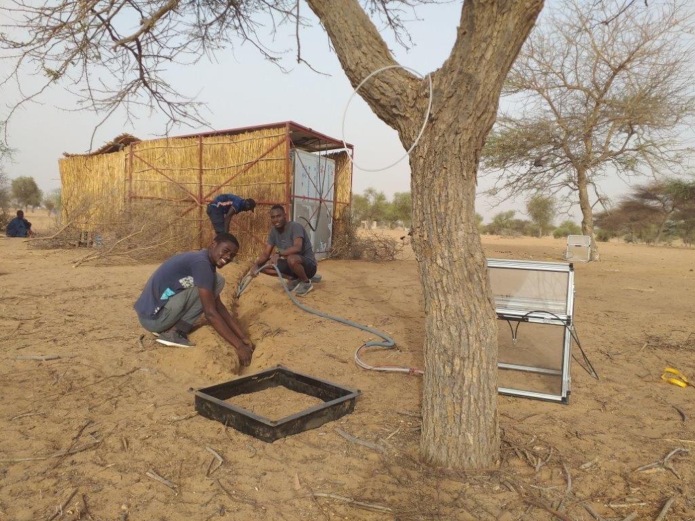

Project’s summary
CaSSECS 1 is a research and development project supporting innovation for the resilience of pastoral and agropastoral farming systems in the Sahelian countries of the CILSS. It is implemented through a consortium of eighteen partners (a lead applicant ISRA, nine co-applicants, and eight associates).
Project Objectives
The overall objective of the project is to improve the assessment of the carbon balance of (agro)pastoral farming systems to better quantify their impacts on climate change and develop livestock policies adapted to the Sahel.
More specifically, the goals are:
- Generate knowledge and references on greenhouse gas emission factors and carbon sequestration.
- Develop multi-scale tools and devices for carbon balance assessment.
- Co-design sustainable mitigation options with agropastoralists
My role in the project is associated with the second objective, specifically concentrating on Task 2.1.2. This task involves generating maps of greenhouse gas fluxes in the Sahel region.

Installation of automatic greenhouse gas measurement chambers at the Sylvopastoral site in Dahra, Senegal (Ba et al., 2024)